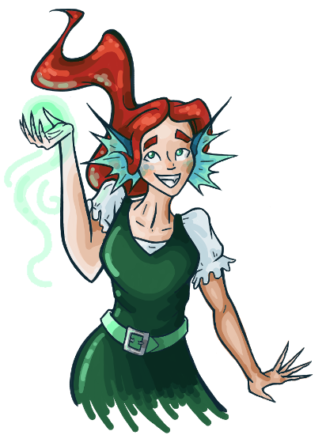

About MerrowWood
I’ve always been passionate about books. I love stories! However, I’ve learned the hard way that not every book was something I wanted to read, and that I couldn’t always tell the difference between a good book, and a bad book. As a member of the Church of Jesus Christ of Latter Day Saints, I believe a high standard for reading. Not everyone agrees with this. I want to destigmatize high standards in literature, and create a community where everyone feels safe to follow their standards. Here at MerrowWood, my mission is to provide clear and effective book reviews so that every reader can read at their comfort level.
My Story
As a child, I practically lived in the library. I spent summers and school lunches tucked away in the shelves, and when I wasn’t there, I was dragging my stack of thirteen books home. Books were my safe haven. I was in junior high when I started running across books that weren’t so safe; many of the books in my library were too mature for my age. Worse, some of the books in my library contained graphic content and pornography, which is too mature for a student of any age. The library, which had once been my shelter, was no longer safe for me. After trial and error, I generally knew which books to avoid, but I realized that my sisters didn’t. They didn’t have the experience I had. To protect my sisters from the same bad books I had been so unlucky to find, I created a system to rate books, and kept track of the ones I had already reviewed. As I got older, I saw many people who wanted to read clean books, but didn’t know where to find them! This frustrated me to no end – I’ve found them! I wanted to shout. I know where you can find books you’d like to read! If only I had a microphone. I’d like to present to you all my microphone. Welcome to MerrowWood!
